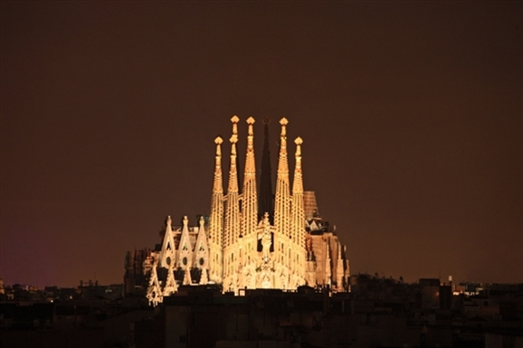
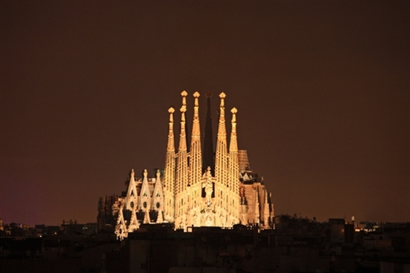

In terms of winter wonderland status, few destinations can compare to Aspen. This scenic mountain town is straight out of a snow globe, featuring picturesque mountain chalets hugged by the soaring Colorado Rockies. Of course, the main draw here is skiing and there are four premier ski areas nearby that cater to powder hounds of all levels. But there's more to Aspen than winter sports: With high-end shopping, fascinating museums, funky galleries and fun festivals, it might be a struggle to make it to the slopes. No matter how you choose to spend your time here, it will be a vacation you'll never forget.
The entire town, which sits about 80 miles north of Vancouver, embodies the ski-chic atmosphere, hosting dozens of ski and snowboard competitions and festivals annually. Whistler continues to buzz through the warmer months, when more outdoor enthusiasts come out to play. Visitors can try bungee jumping, or hiking and biking up the mountains.
While Whistler is an ideal vacation spot for the active types, more mellow travelers will enjoy the area's museums and art galleries that are filled with informative exhibits. Plus, the town boasts family-friendly activities and attractions like ice skating, summer concerts and Olympic Park exploring, along with plenty of shopping options and a deluge of dining venues. With pristine ski spots and plenty of outdoor pursuits, you'll see why so many just want to grab their gear and get to Whistler.
Barcelona contains both the authentically historic and the wildly bizarre. From the tree-lined Las Ramblas to the narrow alleys of Barri Gótic; from the beachside nightclubs to the city's dozens of sacred churches and cathedrals, this city by the sea seems to attract all types: the family, the adventurer, the couple, the backpacker, the culture lover - and more - with an almost overwhelming variety of things to do. You could stay for a few days, but chances are you'll need a whole week to explore.
To many, Costa Rica's charm lies in its lush rainforests, unspoiled beaches and abundance of wildlife. With breathtaking landscapes and a myriad of creatures - from toucans to monkeys to jaguars - it's easy to see why. Where else can you hike active volcanoes, zip line through cloud-covered rainforests and surf warm turquoise waters within the span of just a few days?
In this compact but diverse tropical paradise, exhilarating outdoor activities are abundant. Nature-seekers will roam thick jungles while beachgoers will sprawl across the powdery sands. It's hard not to admire all the splendors this "Rich Coast" has to offer. To truly immerse yourself in the good life, kick-back and admire the awe-inspiring scenery. Surround yourself with graceful butterflies at La Paz Waterfall Gardens, hike along the monumental Arenal Volcano, mingle with locals at Puerto Viejo de Talamanca, or simply sit in a hammock under a palm tree along the Nicoya Peninsula.
Honey-dipped sunsets, chocolate-sand beaches, aquamarine skies - Kauai has mastered seduction. But the oldest island in the Hawaiian chain doesn't have to resort to over-the-top luxury or tourist traps to entice; instead, it appeals to a no-muss, no-fuss type of traveler. There are only two major highways, and some regions can only be explored on foot. Resorts are no taller than a coconut tree (literally). To get the most and save the most, consider visiting in fall.
 
